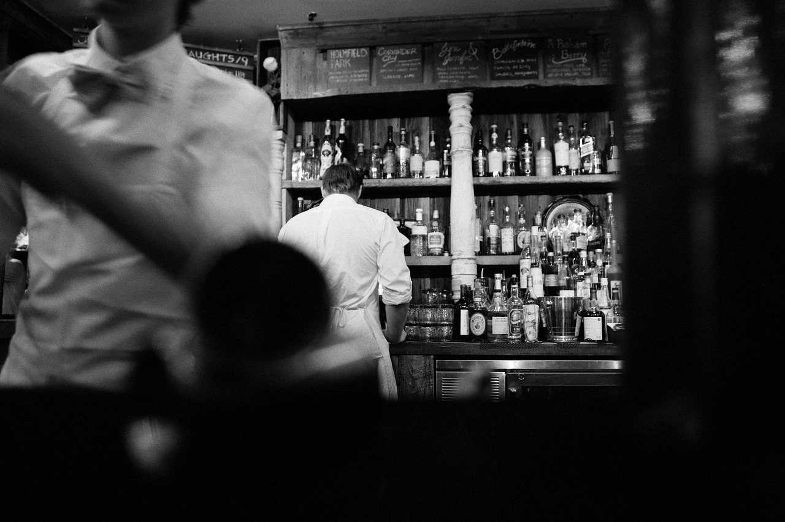
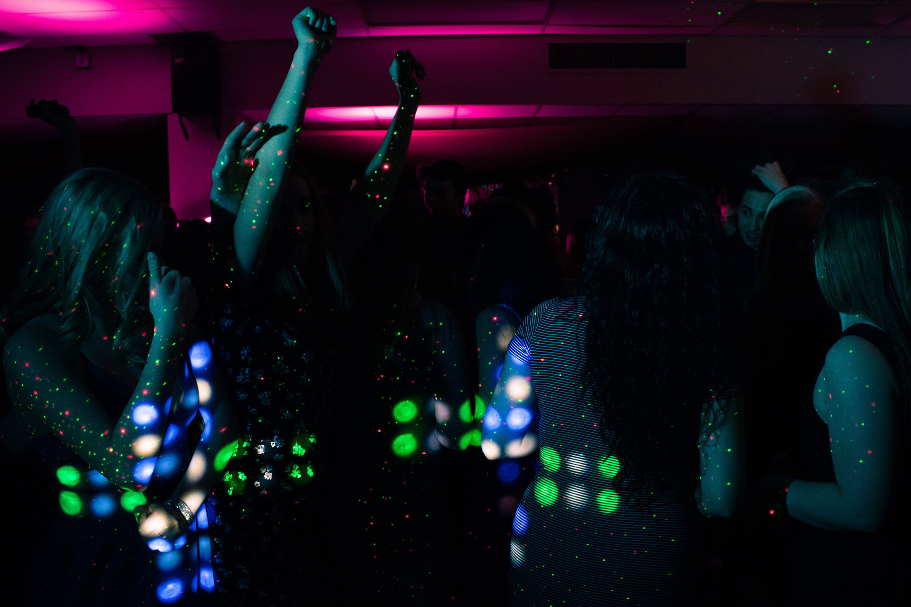
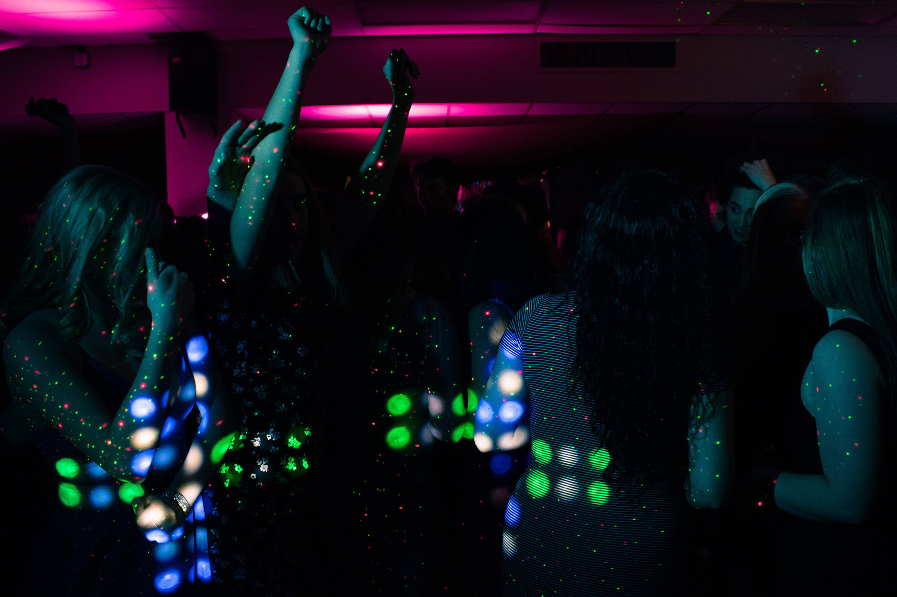
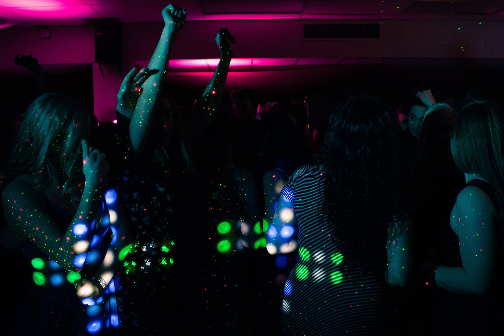

BlackDog Ballroom

 


BlackDog Ballroom is a chilled out establishment, placed conveniently near the area where the Northern Quarter borders Picadilly Gardens.
This makes getting there incredibly easy, with the Metrolink and the bus station not 200m away.
In this beautifully designed bar/club you will find not only a large dancefloor, but also pool tables and exquisite seating.
The bar is large and sells everything: A wide asortment of beers and cider on tap, bottled beverages and more spirits than you can imagine!
The pricing is great too (mostly) with the STUDENT DOG TAG, which is available at the bar, giving you up to 50% off on all ciders and beers.
Beware the spirits though, as they will cost you a pretty penny!